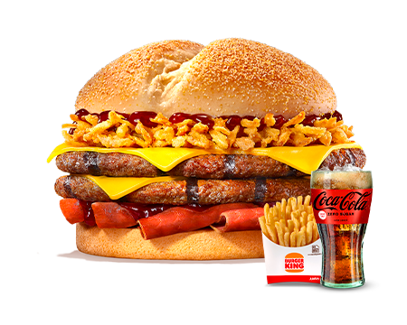
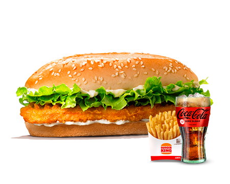

Whooper® Menü
Whopper® eti, büyük boy susamlı sandviç ekmeği, salatalık turşusu, ketçap, mayonez, doğranmış marul, domates ve soğandan oluşan bir Burger King® klasiği. Enfes patates kızartması ve içeceğiyle birlikte Whopper® Menü keyfini istediğin gibi yaşa!
- Enerji(kcal) 1190,28
- Protein(g) 29,94
- K.hidrat(g) 145,49
- Yağ(g) 54,51
- Sodyum(mg) 1668,09
Rodeo Whopper® Menü
Whopper® eti, büyük boy susamlı sandviç ekmeği, mayonez, doğranmış marul, soğan halkaları, nefis barbekü sosu ve 2 adet cheddar peynirinden oluşan Whopper® lezzeti. Enfes patates kızartması ve içeceğiyle birlikte Rodeo Whopper® Menü keyfini istediğin gibi yaşa!
- Enerji(kcal) 1404,91
- Protein(g) 38,32
- K.hidrat(g) 159,99
- Yağ(g) 68,45
- Sodyum(mg) 2118,02
Double Whopper®
İki adet Whopper® eti, büyük boy susamlı sandviç ekmeği, salatalık turşusu, ketçap, mayonez, doğranmış marul, domates ve soğanla, klasik Whopper® lezzetini ikiye katlamak için ideal. Enfes patates kızartması ve içeceğiyle birlikte Double Whopper® Menü keyfini istediğin gibi yaşa!
- Enerji(kcal) 1418,28
- Protein(g) 46,44
- K.hidrat(g) 145,49
- Yağ(g) 72,51
- Sodyum(mg) 1699,07

Triple Whopper® Menü
3 adet Whopper® eti, büyük boy susamlı sandviç ekmeği, salatalık turşusu, ketçap, mayonez, göbek salata, domates ve soğandan oluşan nefis bir seçim. Enfes patates kızartması ve içeceğiyle birlikte Triple Whopper® Menü keyfini istediğin gibi yaşa!
- Enerji(kcal) 1646,28
- Protein(g) 63,18
- K.hidrat(g) 150,62
- Yağ(g) 91,83
- Sodyum(mg) 1363,28
Whopper Jr.® Menü
Hamburger eti, küçük boy susamlı sandviç ekmeği, salatalık turşusu, ketçap, mayonez, doğranmış marul, domates ve soğandan oluşan, Whopper® lezzetinden vazgeçemeyenlere nefis bir seçim. Enfes patates kızartması ve içeceğiyle birlikte Whopper Jr.® Menü keyfini istediğin gibi yaşa!
- Enerji(kcal) 864,19
- Protein(g) 17,87
- K.hidrat(g) 126,28
- Yağ(g) 34,13
- Sodyum(mg) 1051,87
Planet-Based Whopper®
Menü
- Enerji(kcal) 1095,32
- Protein(g) 27,79
- K.hidrat(g) 148,37
- Yağ(g) 43,15
- Sodyum(mg) 1757,48
BK Crispy Chicken® Menü
Mısır gevreği kaplı çıtır çıtır tavuğu ve lezzetli acısıyla bir Burger King® lezzeti! Enfes patates kızartması ve içeceğiyle birlikte BK Crispy Chicken Menü keyfini istediğin gibi yaşa!
- Enerji(kcal) 986,03
- Protein(g) 19,61
- K.hidrat(g) 121,89
- Yağ(g) 46,87
- Sodyum(mg) 1385,12
Double Whopper Jr.® Menü
Hamburger eti, küçük boy susamlı sandviç ekmeği, salatalık turşusu, ketçap, mayonez, doğranmış marul, domates ve soğandan oluşan, Whopper® lezzetinden vazgeçemeyenlere nefis bir seçim. Enfes patates kızartması ve içeceğiyle birlikte Whopper Jr.® Menü keyfini istediğin gibi yaşa!
- Enerji(kcal) 1190,28
- Protein(g) 29,94
- K.hidrat(g) 145,49
- Yağ(g) 54,51
- Sodyum(mg) 1668,09
King Beef Burger Menü
175 gram Alevde Izgara Eti, Yumuşacık Artizan Ekmeği ile Gurmelerin Ağzını Açık Bırakan Lezzet!
- Enerji(kcal) 1283,35
- Protein(g) 47,35
- K.hidrat(g) 51,41
- Yağ(g) 97,52
- Sodyum(mg) 1561,40
Trüflü King Beef Burger Menü
175 gram Alevde Izgara Eti, Yumuşacık Artizan Ekmeği ile Gurmelerin Ağzını Açık Bırakan Lezzet!
- Enerji(kcal) 1325,35
- Protein(g) 47,71
- K.hidrat(g) 50,69
- Yağ(g) 102,26
- Sodyum(mg) 1414,46
Tavuklu Barbekü Brioche® Menü
Özel kaplamasıyla tavuk göğüs fileto, enfes brioche ekmeği, cheddar peyniri, barbekü sosu, mayonezi ve maruluyla enfes tat! Enfes patates kızartması ve içeceğiyle birlikte Tavuklu Barbekü Brioche Menü keyfini istediğin gibi yaşa!
- Enerji(kcal) 1230,78
- Protein(g) 36,37
- K.hidrat(g) 168,76
- Yağ(g) 48,61
- Sodyum(mg) 2254,82
Etli Barbekü Brioche® Menü
Whopper® eti, enfes brioche ekmeği, cheddar peyniri, barbekü sosu, mayonezi, marulu ve çıtır kaplamalı soğanlarıyla enfes tat! Enfes patates kızartması ve içeceğiyle birlikte Etli Barbekü Brioche Menü keyfini istediğin gibi yaşa!
- Enerji(kcal) 767,57
- Protein(g) 32,11
- K.hidrat(g) 62,36
- Yağ(g) 46,34
- Sodyum(mg) 1245,01
BK Steakhouse Burger®
Menü
Kocaman Steakhouse eti, özel sosu, cheddar peyniri, domatesi, mayonezi, marulu ve çıtır kaplamalı soğanlarıyla sabrınızı zorlayacak bir lezzet. Enfes patates kızartması ve içeceğiyle birlikte BK Steakhouse Burger® Menü keyfini istediğin gibi yaşa!
- Enerji(kcal) 1330,75
- Protein(g) 36,36
- K.hidrat(g) 149,25
- Yağ(g) 65,20
- Sodyum(mg) 2461,22
Köfteburger® Menü
Anne tarifi ile hazırlanan köfteburger eti, küçük boy susamlı sandviç ekmeği, salatalık turşusu, ketçap, mayonez ve marulun eşsiz birleşimi. Enfes patates kızartması ve içeceğiyle birlikte Köfteburger Menü keyfini istediğin gibi yaşa!
- Enerji(kcal) 840,65
- Protein(g) 15,92
- K.hidrat(g) 120,56
- Yağ(g) 32,99
- Sodyum(mg) 3576,96
Double Köfteburger® Menü
Anne tarifi ile hazırlanan 2 adet Köfteburger® eti, cheddar peyniri, küçük boy susamlı sandviç ekmeği, salatalık turşusu, ketçap, mayonez ve marulun eşsiz birleşimi. Enfes patates kızartması ve içeceğiyle birlikte Double Köfteburger® Menü keyfini istediğin gibi yaşa!
- Enerji(kcal) 460,30
- Protein(g) 22,09
- K.hidrat(g) 29,10
- Yağ(g) 28,66
- Sodyum(mg) 5758,20
Texas Smokehouse
Burger® Menü
Whopper® eti, füme eti, cheddar peyniri, barbekü sosu ve çıtır kaplamalı soğanları ile nefis bir seçim. Enfes patates kızartması ve içeceğiyle birlikte Texas Smokehouse Burger® Menü keyfini istediğin gibi yaşa!
- Enerji(kcal) 1303,97
- Protein(g) 48,79
- K.hidrat(g) 147,30
- Yağ(g) 57,82
- Sodyum(mg) 2824,44

Double Texas
Smokehouse Burger®
Menü
2 kat Whopper® eti, füme eti, barbekü sosu, cheddar peyniri ve çıtır kaplamalı soğanları ile nefis bir seçim. Enfes patates kızartması ve içeceğiyle birlikte Double Texas Smokehouse Burger® Menü keyfini istediğin gibi yaşa!
- Enerji(kcal) 1626,61
- Protein(g) 71,84
- K.hidrat(g) 147,69
- Yağ(g) 83,23
- Sodyum(mg) 3271,41
Klasik Gurme Tavuk® Menü
Özel kaplamasıyla tavuk göğüs fileto, mısır irmiği ile süslemeli özel ekmeği, mayonezi, domatesi ve doğranmış maruldan oluşan yeni bir Burger King lezzeti. Enfes patates kızartması ve içeceğiyle birlikte Klasik Gurme Tavuk® Menü keyfini istediğin gibi yaşa!
- Enerji(kcal) 1227,01
- Protein(g) 29,92
- K.hidrat(g) 159,14
- Yağ(g) 52,51
- Sodyum(mg) 1898,26
Spicy Gurme Tavuk Menü
Özel kaplamasıyla tavuk göğüs fileto, mısır irmiği ile süslemeli özel ekmeği, spicy sosu, domatesi ve doğranmış maruldan oluşan yeni bir Burger King lezzeti. Enfes patates kızartması ve içeceğiyle birlikte Spicy Gurme Tavuk Menü keyfini istediğin gibi yaşa!
- Enerji(kcal) 1162,05
- Protein(g) 30,12
- K.hidrat(g) 159,76
- Yağ(g) 44,84
- Sodyum(mg) 2151,22
Big King® Menü
2 adet Hamburger eti, 3 katlı özel ekmeği, cheddar peyniri, salatalık turşusu, doğranmış marul ve soğana eşlik eden özel Big King® sosun birleşimi. Enfes patates kızartması ve içeceğiyle birlikte Big King® Menü keyfini istediğin gibi yaşa!
- Enerji(kcal) 1115,50
- Protein(g) 32,49
- K.hidrat(g) 135,24
- Yağ(g) 49,59
- Sodyum(mg) 1366,48
Big King XXL® Menü
2 adet Whopper® eti, büyük boy susamlı sandviç ekmeği, 4 adet cheddar peyniri, salatalık turşusu, doğranmış marul, soğan ve Big King® sosunun birleştiği göz doyurucu bir seçim. Enfes patates kızartması ve içeceğiyle birlikte Big King XXL® Menü keyfini istediğin gibi yaşa!
- Enerji(kcal) 1546,90
- Protein(g) 59,49
- K.hidrat(g) 143,84
- Yağ(g) 81,77
- Sodyum(mg) 2355,51

Double Big King® Menü
4 adet Hamburger eti, 3 katlı özel ekmeği, cheddar peyniri, salatalık turşusu, doğranmış marul ve soğana eşlik eden özel Big King® sosun birleşimi. Enfes patates kızartması ve içeceğiyle birlikte Double Big King® Menü keyfini istediğin gibi yaşa
- Enerji(kcal) 1332,18
- Protein(g) 49,85
- K.hidrat(g) 136,23
- Yağ(g) 65,31
- Sodyum(mg) 1428,61
Big King Jr.® Menü
Hamburger eti, küçük boy susamlı sandviç ekmeği, cheddar peyniri, salatalık turşusu, doğranmış marul ve soğana eşlik eden özel Big King® sosun birleşimi. Enfes patates kızartması ve içeceğiyle birlikte Big King®Jr. Menü keyfini istediğin gibi yaşa!
- Enerji(kcal) 1006,74
- Protein(g) 29,90
- K.hidrat(g) 121,76
- Yağ(g) 44,50
- Sodyum(mg) 1216,47
Hamburger Menü
Hamburger eti, küçük boy susamlı sandviç ekmeği, salatalık turşusu, hardal ve ketçaptan oluşan lezzet. Enfes patates kızartması ve içeceğiyle birlikte Hamburger Menü keyfini istediğin gibi yaşa!
- Enerji(kcal) 589,49
- Protein(g) 16,27
- K.hidrat(g) 86,81
- Yağ(g) 19,94
- Sodyum(mg) 817,28
Cheeseburger Menü
Hamburger eti, küçük boy susamlı sandviç ekmeği, salatalık turşusu, cheddar peyniri, hardal ve ketçaptan oluşan lezzet. Enfes patates kızartması ve içeceğiyle birlikte, Burger King’in klasik seçmelerinden biri olan Cheeseburger Menü keyfini istediğin gibi yaşa!
- Enerji(kcal) 639,18
- Protein(g) 19,57
- K.hidrat(g) 87,57
- Yağ(g) 23,65
- Sodyum(mg) 1045,20
Double Cheeseburger
Menü
2 adet Hamburger eti, küçük boy susamlı sandviç ekmeği, salatalık turşusu, 2 adet cheddar peyniri, hardal ve ketçaptan oluşan lezzet. Enfes patates kızartması ve içeceğiyle birlikte, Burger King®’in klasik seçmelerinden biri olan Double Cheeseburger Menü keyfini istediğin gibi yaşa!
- Enerji(kcal) 979,85
- Protein(g) 32,84
- K.hidrat(g) 121,53
- Yağ(g) 40,48
- Sodyum(mg) 1480,78
Etlü Barbekü Deluxe
Burger Menü
Hamburger eti, küçük boy susamlı sandviç ekmeği, cheddar peyniri, barbekü sosu ve çıtır kaplamalı soğanlarıyla Burger King’in lezzet alternatifini, enfes patates kızartması ve içeceğiyle birlikte istediğin gibi yaşa!
- Enerji(kcal) 959,57
- Protein(g) 22,31
- K.hidrat(g) 126,51
- Yağ(g) 41,39
- Sodyum(mg) 1266,39

Tavuklu Barbekü
Deluxe Burger Menü
Tavukburger eti, küçük boy susamlı sandviç ekmeği, cheddar peyniri, barbekü sosu ve çıtır kaplamalı soğanlarıyla Burger King’in lezzet alternatifini, enfes patates kızartması ve içeceğiyle birlikte istediğin gibi yaşa!
- Enerji(kcal) 940,44
- Protein(g) 14,14
- K.hidrat(g) 131,51
- Yağ(g) 39,98
- Sodyum(mg) 1235,59
Mega Double
Cheeseburger Menü
2 adet Whopper eti, büyük boy susamlı sandviç ekmeği, salatalık turşusu, 4 adet cheddar peyniri, hardal ve ketçaptan oluşan oluşan lezzet. Enfes patates kızartması ve içeceğiyle birlikte Mega Double Cheeseburger Menü keyfini istediğin gibi yaşa!
- Enerji(kcal) 1444,45
- Protein(g) 59,16
- K.hidrat(g) 144,26
- Yağ(g) 70,46
- Sodyum(mg) 2473,87
Bean Burger® Menü
Fasülye ve sebzelerden oluşan Bean Burger®, uzun ve büyük boy susamlı sandviç ekmeği, leziz 2 adet cheddar peyniri, ketçap ve domatesin iştah açıcı birleşimi. Sebze severler için ideal olan bu keyfi, enfes patates kızartması ve içeceği ile istediğin gibi yaşa!
- Enerji(kcal) 999,56
- Protein(g) 17,13
- K.hidrat(g) 153,76
- Yağ(g) 35,36
- Sodyum(mg) 1479,68
Fish Royal® Menü
Fish Royale® eti, küçük boy susamlı sandviç ekmeği, doğranmış marul ve Burger King® klasiğine lezzetini veren tartar sosun birleşimi olan Fish Royale®, balık eti sevenlerin tercihi olacak. Enfes patates kızartması ve içeceği ile istediğin gibi yaşa!
- Enerji(kcal) 1070,20
- Protein(g) 21,42
- K.hidrat(g) 139,60
- Yağ(g) 43,52
- Sodyum(mg) 1233,82

Chicken Royal® Menü
Chicken Royale® eti, uzun ve büyük boy susamlı sandviç ekmeği, mayonez ve doğranmış marul lezzeti. Enfes patates kızartması ve içeceğiyle birlikte Chicken Royale® Menü keyfini istediğin gibi yaşa!
- Enerji(kcal) 1127,25
- Protein(g) 26,90
- K.hidrat(g) 142,56
- Yağ(g) 46,98
- Sodyum(mg) 1844,71
King Chicken® Menü
King Chicken eti, susamlı sandviç ekmeği, mayonez ve doğranmış maruldan oluşan bu son derece sade alternatifi, enfes patates kızartması ve içeceğiyle birlikte istediğin gibi yaşa!
- Enerji(kcal) 986,15
- Protein(g) 24,13
- K.hidrat(g) 129,86
- Yağ(g) 41,50
- Sodyum(mg) 1386,73
Double King Chicken® Menü
2 adet King Chicken® eti, susamlı sandviç ekmeği, mayonez ve doğranmış maruldan oluşan klasikleşmiş lezzet alternatifini, enfes patates kızartması ve içeceğiyle birlikte istediğin gibi yaşa!
- Enerji(kcal) 1114,57
- Protein(g) 37,44
- K.hidrat(g) 132,89
- Yağ(g) 48,50
- Sodyum(mg) 1765,16

Tavukburger® Menü
Tavukburger eti, küçük boy susamlı sandviç ekmeği, mayonez ve doğranmış maruldan oluşan bu son derece sade alternatifi, enfes patates kızartması ve içeceğiyle birlikte istediğin gibi yaşa!
- Enerji(kcal) 774,09
- Protein(g) 19,03
- K.hidrat(g) 92,99
- Yağ(g) 36,20
- Sodyum(mg) 1606,83
6'lı BK King Nuggets® Menü
Enfes patates kızartması ve içeceğiyle birlikte 6'lı BK King Nuggets® Menü keyfini istediğin gibi yaşa!
- Enerji(kcal) 721,04
- Protein(g) 18,854
- K.hidrat(g) 100,91
- Yağ(g) 26,81
- Sodyum(mg) 1051,06
9'lı BK King Nuggets® Menü
Enfes patates kızartması ve içeceğiyle birlikte 9'lu BK King Nuggets® Menü keyfini istediğin gibi yaşa!
- Enerji(kcal) 824,15
- Protein(g) 26,39
- K.hidrat(g) 105,55
- Yağ(g) 32,86
- Sodyum(mg) 1303,91
6'lı Chicken Tenders Menü
Enfes patates kızartması ve içeceğiyle birlikte 9'lu BK King Nuggets® Menü keyfini istediğin gibi yaşa!
- Enerji(kcal) 751,93
- Protein(g) 16,16
- K.hidrat(g) 108,55
- Yağ(g) 27,65
- Sodyum(mg) 1028,22
9'lu Chicken Tenders® Menü
Acı sos ya da barbekü sosu seçenekleriyle özel harcıyla nar gibi kızarmış, 6 ya da 9 parça beyaz tavuk eti. Enfes patates kızartması ve içeceğiyle birlikte 9'lu Çıtır Tavuk Parçaları Menü keyfini istediğin gibi yaşa!
- Enerji(kcal) 870,49
- Protein(g) 22,36
- K.hidrat(g) 116,99
- Yağ(g) 34,57
- Sodyum(mg) 1269,66